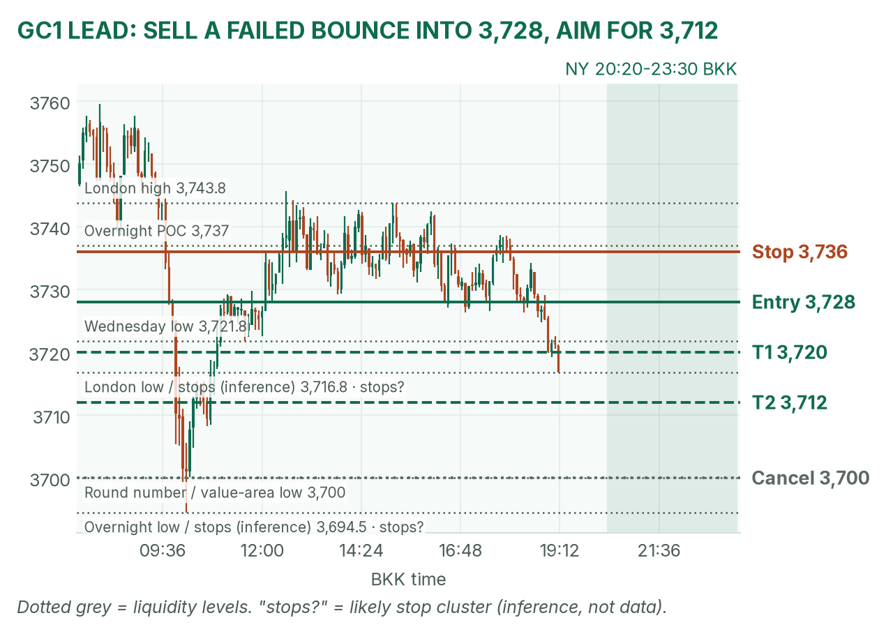
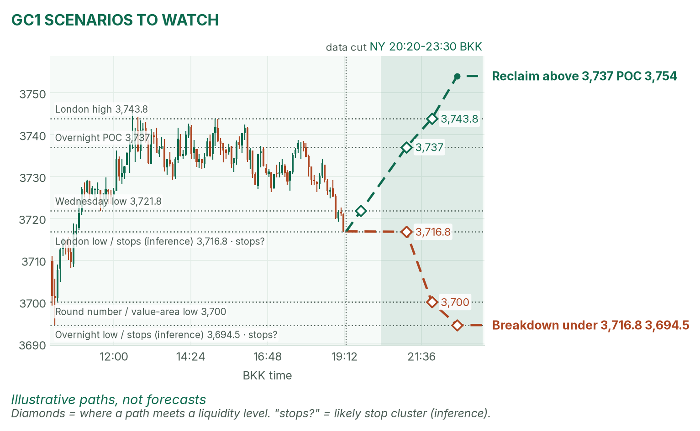
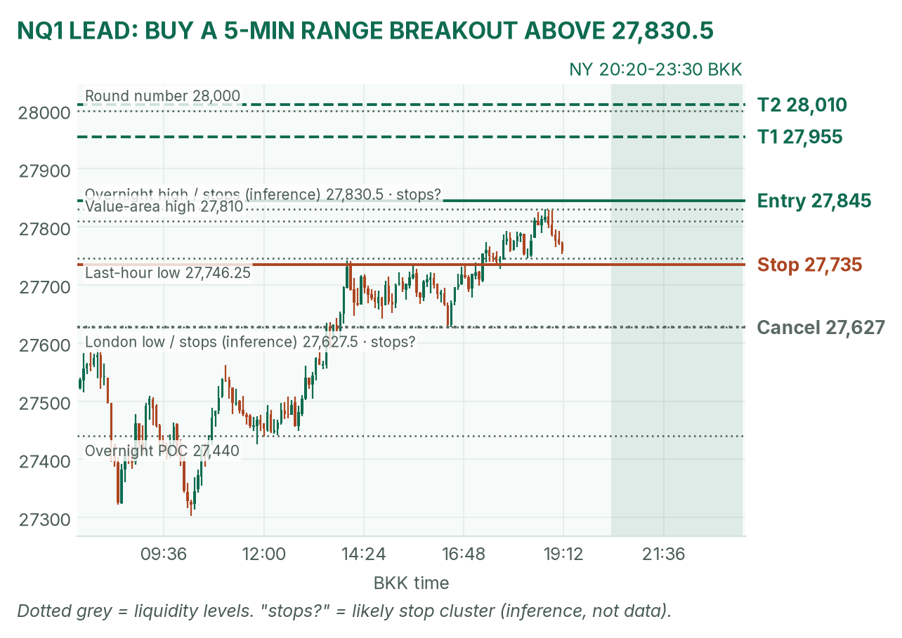
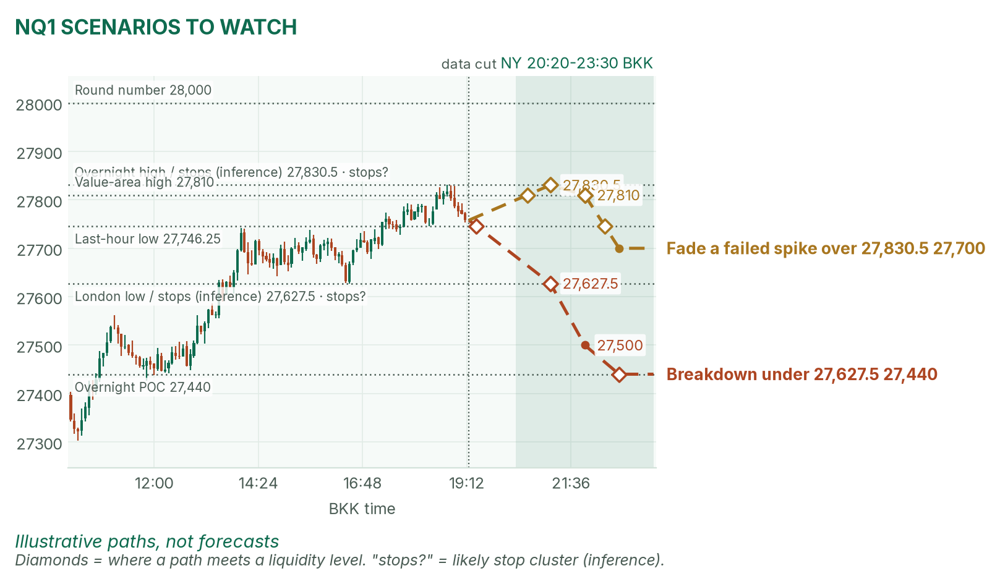

Tech parties on the Anthropic IPO. Sell gold's bounce, buy Nasdaq only on a clean break.
Window 20:20–23:30 BKK (US winter time). Data cut 19:15 BKK: GC 3,716.9, NQ 27,758.00 (Dec contracts, TopstepX, last completed 5-minute bar). Levels only, flat by 23:30. Ideas, not advice. April's pre-NY brief (~18:40 BKK) was read.
Summary
GC: sell a failed bounce into 3,728, stop 3,736, targets 3,720 and 3,712. About 36%.
NQ: buy a 5-minute-range break above 27,830.5, entry 27,845, stop 27,735, targets 27,955 and 28,010. About 33%; only after 21:35.
No-trade zones: 20:25–20:32 (jobless claims, Philly Fed), 21:20–21:27 (Fed's Jefferson), 21:55–22:02 (leading index). Anthropic's first trade after 21:30 can jump prices.
The market story
Gold is stuck in a downtrend. It fell from 3,759.5 early this morning to 3,694.5, bounced, and is now pressing the 3,716.8 London low. The 10-year US yield is up at 5.080% and markets lean toward a December Fed hike (April). Your rates lesson in action: rates rose, so holding gold, which pays no interest, got more expensive.
Nasdaq is up 2.1% on Anthropic's IPO, priced at $83, above its range. It sits near its 27,830.5 high, far above Wednesday's 27,609.75 high. That is a gap (today's trading sits entirely above yesterday's range). Gaps run or fill. My bias: gold down; Nasdaq up, but only on proof at the open.
Stocks open; Anthropic (ANT) first trade after the auction
–
–
The tech decider. A weak debut can fill NQ's gap.
22:00
Leading index
0.0%
–
Second-tier.
Fri 01:00
10-year TIPS auction
–
–
After the window.
No whisper number found; past move sizes not measured this run. Source: April's brief (Investing.com).
Levels to watch
Level
GC
NQ
Wednesday settle (April)
3,741.9
27,186.75
Wednesday high / low
3,859.3 / 3,721.8
27,609.75 / 26,921.75
Overnight high / low (since 06:00)
3,759.5 / 3,694.5
27,830.50 / 27,169.00
London high / low (since 15:00)
3,743.8 / 3,716.8
27,830.50 / 27,627.50
Overnight POC
3,737
27,440
Overnight value area
3,700–3,754
27,330–27,810
Last-hour high / low
3,734.2 / 3,716.8
27,830.50 / 27,746.25
Expected NY range (4-session median)
about 45 points
about 589 points
Gold (GC1)
Bias: down. Gold is at its London low, below the 3,737 POC (the busiest overnight price). The NY rule fades the 20:20 COMEX opening range back toward the POC; with this trend I only sell a pop toward the broken 3,721.8 Wednesday low.
The trade: sell the failed bounce
Entry
Sell 3,726–3,730 (plan 3,728), after 20:32, only if a bounce stalls under the 3,734.2 last-hour high
Stop
3,736, above the last-hour high and just under the POC
Targets
1R partial 3,720 · T2 3,712 (2.0R), under the London low's stops
Cancel
A trade below 3,700 before the fill, or no fill by 22:30
Probability
~36%, an estimate. Basis: GC NY opening ranges mostly failed and reverted in my 42-session study (not significant); T2 is a third of the expected range, with the trend.
A cold claims print that lifts gold back over 3,737 kills the idea. April agrees: low claims "would press gold again."

GC 5-minute bars into 19:15. Every London rally stalled under 3,744.

Illustrative paths, not forecasts.
Scenarios to watch
Bearish breakdown: a 5m close below 3,716.8 with no bounce. Stops likely sit there (inference). Aims for 3,700, then 3,694.5.
Bullish reclaim: a 5m close above the 3,737 POC that holds. Aims for 3,754.
Nasdaq (NQ1)
Bias: up, but stretched. NQ sits at the top of its 27,330–27,810 value area (where 70% of volume traded). The NY rule: trade breakouts of the 21:30–21:35 range. After about 22:00, stay long only above VWAP (the volume-weighted average price).
The trade: bullish range breakout
Entry
Buy stop 27,845, after 21:35, only if the 21:30–21:35 range high is at or under 27,830.5
Stop
27,735, under the 27,746.25 last-hour low
Targets
1R partial 27,955 · T2 28,010 (1.5R), near the round 28,000
Cancel
A trade below 27,627.5 before the fill, or no fill by 22:45
Probability
~33%, an estimate. Basis: NQ 5-minute breakouts did best in my study (+0.37R, 31 trades, not significant); the gap adds fill risk.
A weak Anthropic debut can fill the gap fast; don't buy a break that snaps back under 27,810. April partly agrees: NQ "could clear 27,792.50" on a strong debut, but she calls the steady range the base case.

NQ 5-minute bars into 19:15. A steady climb from 27,169 to 27,830.5, now pausing just under the high.

Illustrative paths, not forecasts.
Scenarios to watch
Bearish gap fill: a 5m close below 27,627.5 (stops, inference). Aims for the 27,440 POC.
Mean reversion: a spike over 27,830.5 that fails back under 27,810. Aims for 27,700.
6E: 1.1000, off its 1.10205 high. Context only.
Before you click
ORB bases. GC NY: 20:20 COMEX open until a 2-minute candle's volume drops below half the first two's average, fade to POC. NQ NY: 21:30–21:35 range, trade breakouts. GC and 6E London: 15:00–15:30 range (fade gold, break the euro).
Checklist. 1) Room to today's max loss? 2) Within daily rules? 3) No release within 30 minutes? 4) Agrees with the bias? 5) At a marked level? 6) Setup tagged? 7) Entry, stop, 1R partial, target set? 8) Calm, not chasing?
Reset (60 seconds). Hands off the mouse. Breathe in 4, hold 4, out 6, five times. Name the feeling in one word. "Eager" or "frustrated"? Wait 5 minutes.